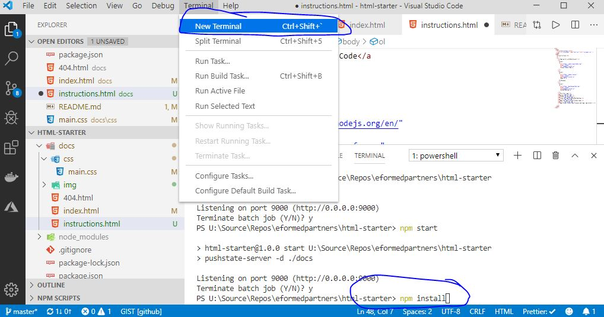

Instructions
- Sign up for a GitHub Account
-
Install
Visual Studio Code
-
Install
Node.JS
LTS Release
-
Install
GitHub Desktop
- Fork this repo

- Rename the new repo

- Clone the repo using GitHub Desktop

- Open the repo in Visual Studio Code

- Open Visual Studio Code Terminal and type 'npm install'

-
From this point you are free to change anything you want inside the
/docs folder. To serve the web page locally, type 'npm start' into the
terminal and visit
http://localhost:9000
Optional Public Serving Steps
-
Enable GitHub Pages on your new repo to use the /docs folder (that's why
we use /docs instead of something more standard like /dist)

-
Change the CName/Custom Domain value in the UI or in the /docs folder to
be a domain that is pointed to your github pages URL ([you].github.io).
Also tick the Https box. It may give you an error intially, but will
eventually work.
-
You should now (or soon) be able to see this website at whatever URL you
typed into the box.